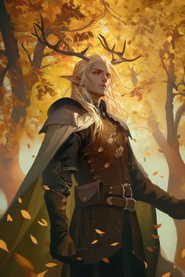
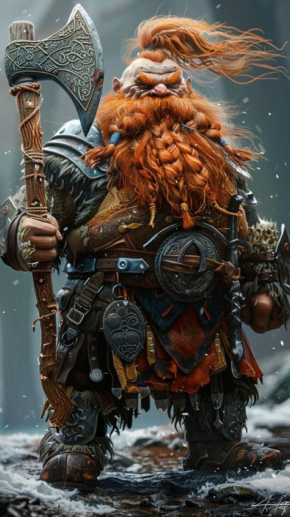
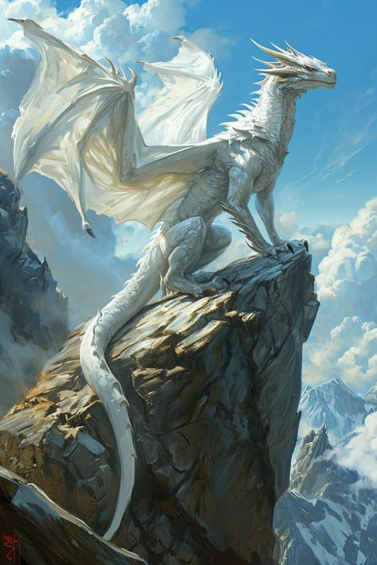
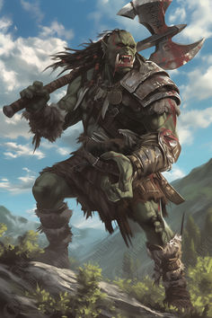
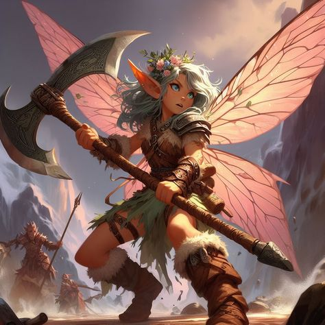
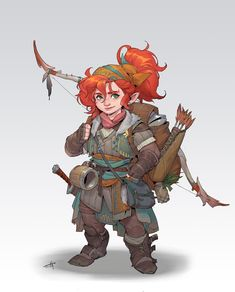
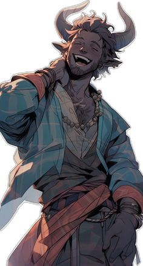
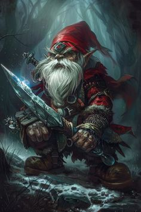

RPG de Mesa: Raças Místicas no Mundo Fantástico
Os RPGs de mesa são uma forma envolvente de contar histórias, onde os jogadores assumem papéis de personagens em mundos fantásticos. Um dos elementos mais fascinantes desses mundos são as diversas raças místicas que habitam esses universos, cada uma com suas características, habilidades e culturas únicas.
Elfos
Conhecidos por sua beleza e longevidade, os elfos são mestres da magia e da natureza. Em muitas configurações, eles vivem em florestas encantadas e são reconhecidos por sua conexão profunda com a flora e fauna.
Anões
Pequenos, mas robustos, os anões são habilidosos em mineração e forjaria. Eles geralmente habitam montanhas e cavernas, construindo grandes cidades subterrâneas e sendo conhecidos por sua resistência e bravura.
Dragões
Embora não sejam uma raça jogável em todas as regras de RPG, os dragões são seres poderosos e majestosos, frequentemente envolvidos em mitos e lendas. Eles variam enormemente em aparência e características, podendo ser benevolentes ou malignos.
Orcs
Geralmente retratados como guerreiros brutais, os orcs possuem uma sociedade tribal e são conhecidos por sua força física. No entanto, muitas histórias modernas os exploram como indivíduos complexos com suas próprias tradições e valores.
Fadas
Criaturas mágicas que geralmente habitam florestas ou dimensões alternativas, as fadas são conhecidas por sua astúcia e habilidades encantadoras. Elas podem ser tanto aliadas como adversárias, dependendo de seu humor.
Halflings
Pequenos e sociáveis, os halflings são conhecidos por sua habilidade em se esconder e sua natureza aventureira. Eles geralmente vivem em comunidades agrárias e são apreciadores da boa comida e do conforto.
Tieflings
Descendentes de humanos e seres demoníacos, os tieflings têm características únicas, como pele colorida e chifres. Eles muitas vezes enfrentam preconceito, mas possuem habilidades mágicas que os tornam valiosos em qualquer equipe.
Gnomos
Criaturas pequenas e engenhosas, os gnomos são conhecidos por sua criatividade e curiosidade. Eles frequentemente se destacam em inventos e mágica, habitando ambientes subterrâneos ou em colônias em florestas.
Essas são apenas algumas das muitas raças místicas que podem ser encontradas em mundos de RPG de mesa. A verdadeira beleza do RPG está na personalização e na criação de narrativas únicas, permitindo que os jogadores explorem as dinâmicas entre essas raças e suas interações em aventuras épicas.